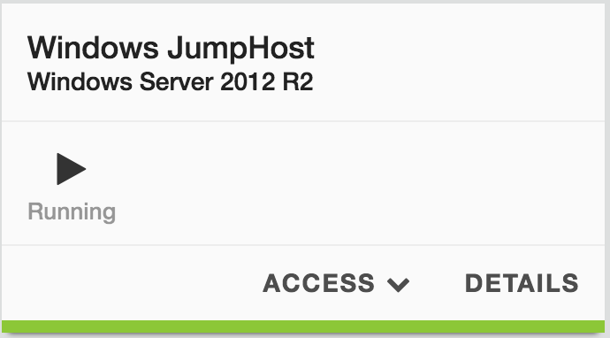

Lab 0.2 - Access Your lab¶
Task 1 - Launch your RDP session¶
Once your deployment is up and running, you should try to access the JumpHost via RDP.
Perform the following steps to complete this task:
In the UDF interface, go to Deployments.
Find the deployment named
Intro to iControl LX extensionand click Details.Click on the Components tab and find the component named
JumpHostin the Systems column.Click on the Access button, then select RDP. An RDP file will be downloaded automatically that allows you to launch the RDP session.
Warning
For Mac users, it is recommended to use Microsoft Remote Desktop. You may not be able to access your jumpbox otherwise. It is available in the Mac App Store as a free download.
Open the RDP connection to the jumphost.
Login with the following credentials:
- Username:
administrator - Password:
cXzTEv8E5
- Username:
{kind=link}
Note
To prevent having to switch between windows or screens this lab guide is setup as the homepage of the Chrome browser on the jumphost.